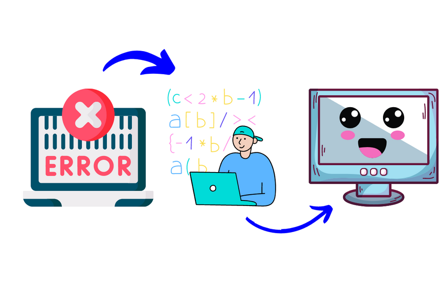
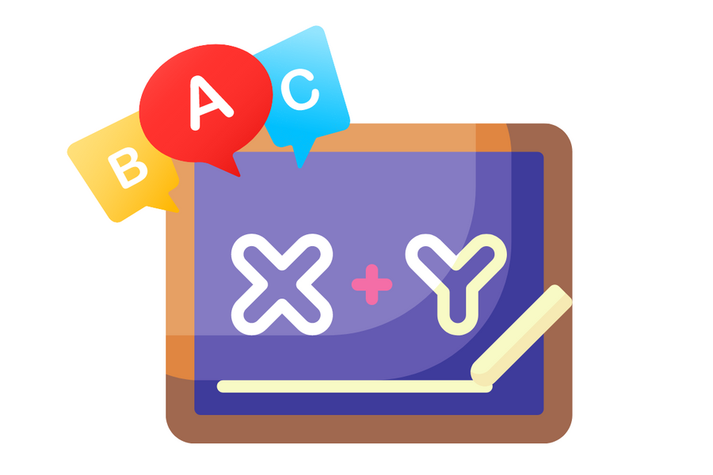
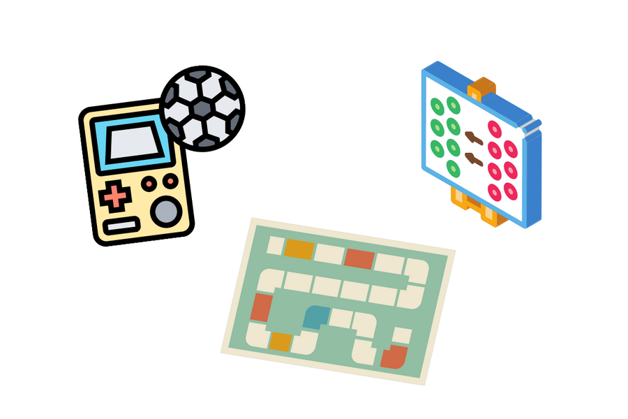

ประโยชน์ของโค้ดดิ้ง
1. เป็นทักษะแห่งอนาคต
เป็นทักษะที่มีประโยชน์มาก เนื่องจากจำนวนธุรกิจใหม่ๆ ที่มีมากขึ้น และหนีไม่พ้นเทคโนโลยี การเขียนโปรแกรมเป็นก็มีโอกาสเรื่องงานได้มากกว่า
เช่น นักพัฒนาแอปพลิเคชัน ที่ใช้กับธุรกิจ ธนาคาร สตาร์ทอัพ จองตั๋ว สั่งอาหาร บอกเส้นทาง บอกสภาพอากาศ ฯลฯ
คิดนวัตกรรมใหม่ๆ เช่น หุ่นยนต์ เครื่องจักร แขนกล ปัญญาประดิษฐ์
หรือแม้แต่การขายของออนไลน์ก็จะสามารถตอบโจทย์ลูกค้าได้สะดวกขึ้น
2. ฝึกการคิดอย่างเป็นระบบ
ข้อดีที่สำคัญในการเขียนโปรแกรมคือ การเรียงลำดับความสำคัญอย่างเป็นขั้นเป็นตอน หรือการแก้ปัญหา ซึ่งนำไปใช้ในชีวิตประจำวันได้
เช่น หากต้องการทำไข่เจียว ก็ต้องตีไข่ใส่ถ้วย จากนั้นเปิดเตา เทน้ำมัน เจียวไข่ รอให้ร้อน แล้วค่อยเทไข่ใส่กระทะ เป็นต้น
เช่นกัน การเขียนโปรแกรมเพื่อสั่งงานคอมพิวเตอร์ ก็ต้องสั่งงานทีละอย่าง ทีละขั้นตอน เพื่อให้คอมพิวเตอร์ทำงานได้อย่างถูกต้อง

3. เรียนรู้จากข้อผิดพลาด
เมื่อผู้เขียนโปรแกรมเขียนโค้ดแล้วโค้ดผิด จะทำให้ได้เรียนรู้จากความผิดพลาด ลองหาคำตอบ แก้ไขสิ่งที่ถูกต้องด้วยตนเอง ทำให้เกิดความมั่นใจในการแก้ปัญหามากขึ้น
ความผิดพลาดเป็นเรื่องธรรมดาของมนุษย์ การยอมรับและแก้ไขข้อผิดพลาด ก็เป็นเรื่องปกติเช่นกัน
4. เสริมการเรียนวิชาอื่นๆ ไปพร้อมกัน
ทักษะในการเขียนโค้ด นอกจากวิธีคิดแล้ว ยังได้รับทักษะความรู้ด้านอื่นๆ ได้อีกด้วย เช่น วิชาวิทยาศาสตร์ ในการทดลอง คิดค้นสิ่งใหม่ๆ วิชาคณิตศาสตร์ ในการคำนวณ และตรรกศาสตร์ วิชาภาษาอังกฤษ ที่จะต้องใช้ในการเขียนคำสั่งโค้ด
5. ได้ความสนุกและความคิดสร้างสรรค์
เครื่องมือเรียนเขียนโค้ดในปัจจุบันมีมากมาย ทำให้ผู้เรียนสนุก เรียนไม่เบื่อ และมีโอกาสได้ใช้ความคิดสร้างสรรค์ด้วย เช่น บอร์ดเกมสอนการเขียนโค้ด เวิร์คช็อปที่เน้นระบบคิดในการเขียนโค้ดผ่านเกมและกิจกรรมกลุ่ม หรือการเขียนโปรแกรมที่เปิดโอกาสให้ผู้เขียนลงมือสร้างเกม ทำอนิเมชัน หรือประดิษฐ์สิ่งต่างๆ แล้วควบคุมด้วยตนเอง
